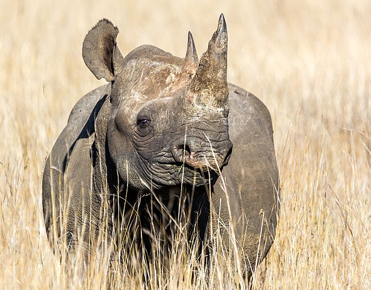
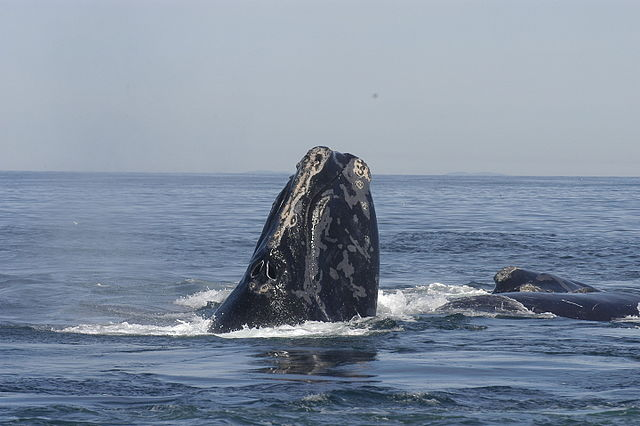
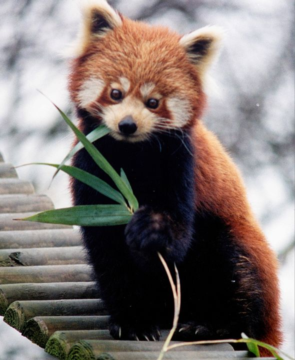

Endangered species are those that are at risk for extinction. It is important to protect these species because once they are gone, they are gone forever. Losing a species can result in food chain and ecosystem disruption, as well as eliminate the possiblity for them to cure diseases or improve the quality of the life for other species.
Black rhinos live in the savannah, woodlands, and wetlands of Africa. Between 1960 and 1995, the number of black rhinos dropped by 98% to under 2,500. Today their numbers have increased to over 5,000. However, they are still in danger of being poached for their horns.

The North Atlantic right whales can be identified by the white calluses on their heads. They are usually found in along the coasts of the Atlantic ocean, especially during breeding season. There are less than 350 of these whales left in the oceans. While they are not in as much danger of whaling like when they first became endangered, humans are still their biggest threat.

Red pandas have bear-like bodys and are slightly larger than domestic cats. They are acrobatic animals that stay in trees, and they mainly live in the Eastern Himalayas. There are less than 10,000 red pandas left, and their population is declining due to habitat loss and poaching.
